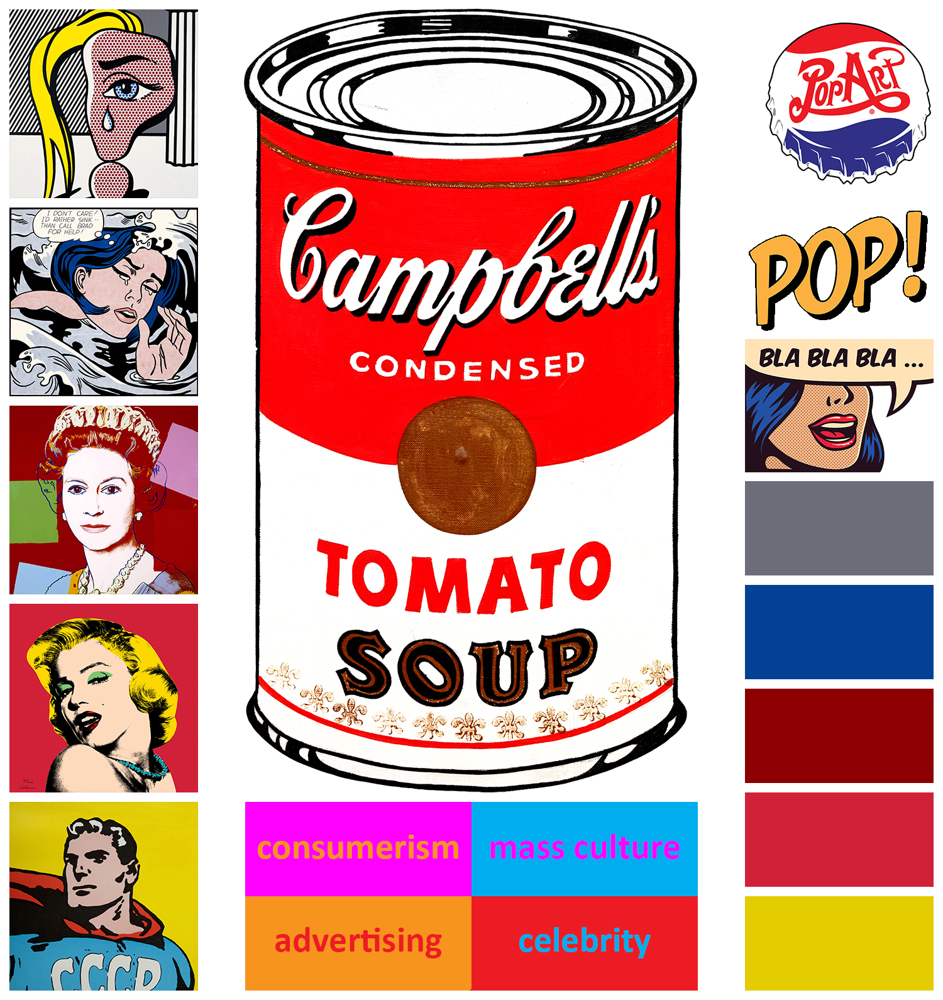
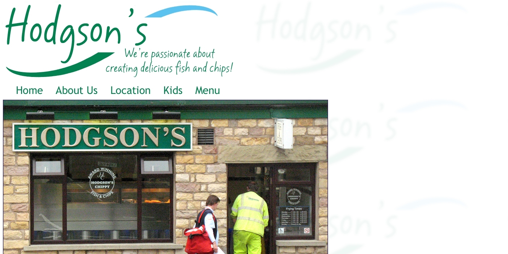
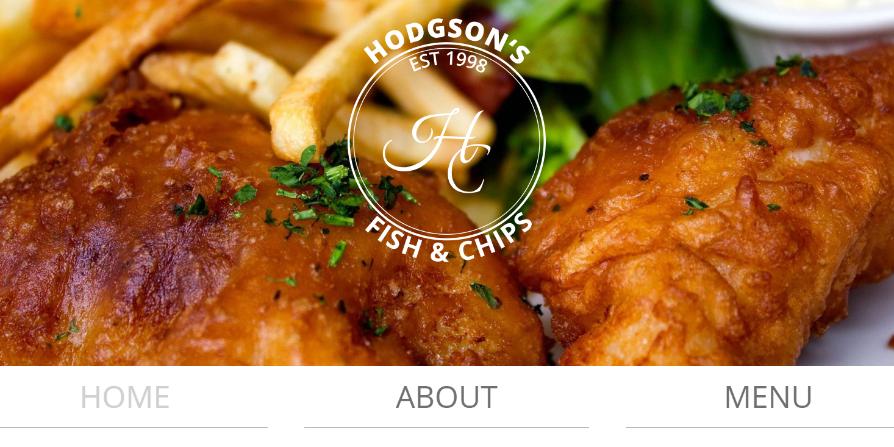
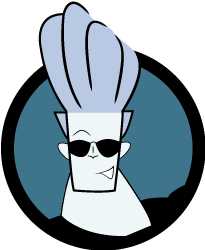
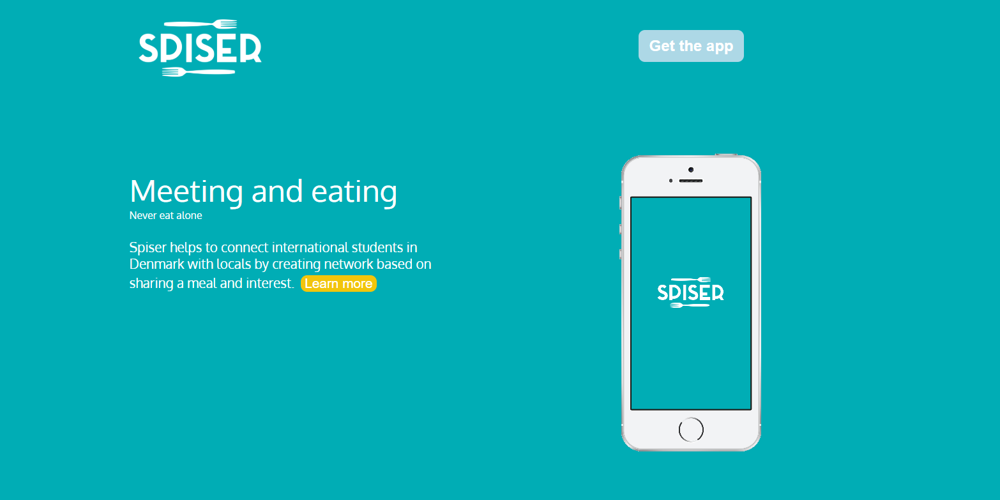

janwloczewski.dk
Design & Visualisation
My first designing experience was creating my first website about an assigned art style. I was introduced into colours, typography, design principles and layouts. I used Adobe Photoshop and Illustrator for the first time. This very first theme also taught me the basics of HTML and CSS.
Mobile Website Design document Responsive website
The first group project in the semester concerned redesign of existing website. As a person responsible for coding, I improved my knowledge about CSS grids and created a new website based on sketches from the other members of the group. Adding to that, I restructured content of the website. Bellow, I show the comparision of the old and the redesigned homepage as well as the link to the whole new website.

login: mmd; password: mmd
Presentation Redesigned website
Theme 2 - animation - gave me an opportunity to improve my drawing skills in Illustrator as well as to learn the basics of JavaScript through FreeCodeCamp. By creating simple animation and Project Pool exercises, I learned how this programming language can be useful in web design.
Simple animation Project Pool 1 Project Pool 2The next large group assignment was interactive production. I was responsible for User Experience, however, I also took an active part in creating a storyline, storyboard, and some graphics in the specific, given style. This theme also taught me how to make a good research and find inspiration online.
Storyboard Expert test
Screen cast Final project
During Theme 3 I was introduced to storytelling, work with sound, light, image composition and Adobe Premiere. I learned the importance of composition in relation to film making. In the first group project we were supposed to tell a story without words, based on proper editing and music selection. In second group project we supported Kobenhavns Kommune in the promotion of safe behaviors while cycling.
In the first project I was co-responsible for film editing. In the second I co-created the website and had a part in creating the storyline.
The last and the longest group assignment was about inventing and developing the app. As a group member I participated in the design creation process. Moreover, I co-created the website promoting our product. My knowledge from the previous themes helped me to design simple and intuitive website's interface.
Canvas model Report Design Documentation
Pitch presentation Website App prototype